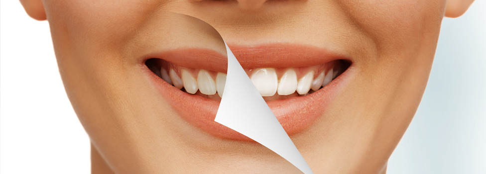
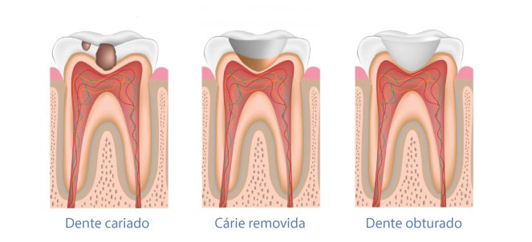
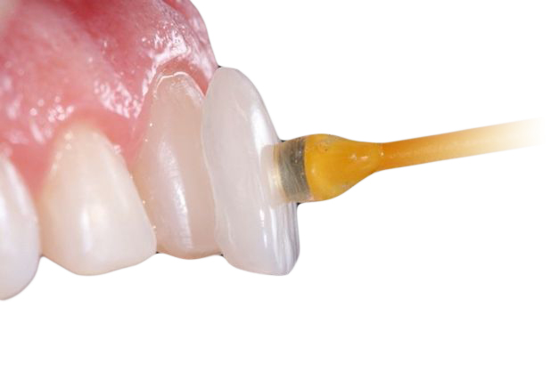
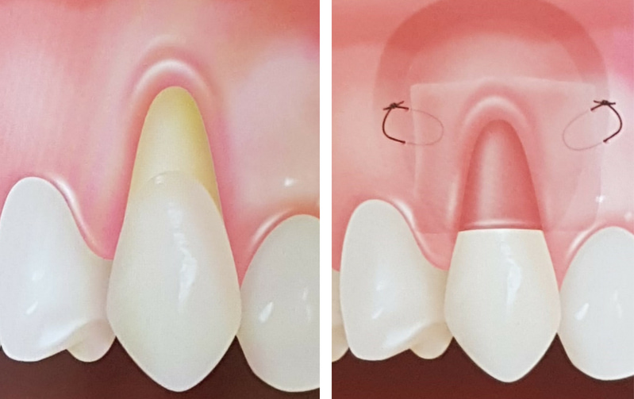
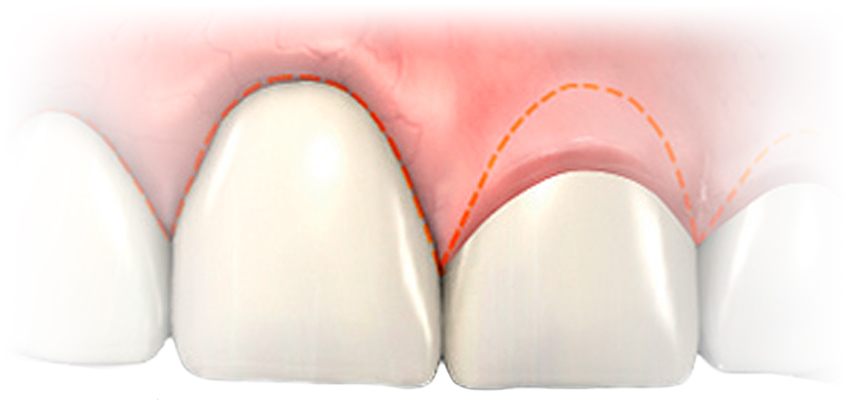

Clareamento Dental
O clareamento dental é um tratamento realizado com substâncias químicas, que modificam a cor do dente. O principal ingrediente que age no clareamento dental é oxigênio, que é proveniente do peróxido de hidrogênio ou peróxido de carbamida.Como todo procedimento clínico na cavidade bucal, o clareamento deve ser realizado com a técnica correta, cuidadosa e sob a supervisão do cirurgião dentista.
Antes de iniciar o tratamento clareador é imprescindível a realização de um criterioso exame clínico e radiográfico, para verificar os possíveis fatores como cáries e infiltrações, que poderão influenciar na sensibilidade dental durante ou após a aplicação da técnica clareadora.
O clareamento não é feito por necessidade, mas por motivação pessoal. O dente escurece com o passar dos anos por que a dentina se forma continuamente dentro do dente, e assim uma camada mais espessa de dentina acaba mostrando um dente mais amarelo. Por causa disso, algumas pessoas gostam de repetir o clareamento depois de alguns anos.
Restaurações estéticas
A restauração é uma forma de fazer com que o dente afetado pela cárie volte à sua forma e sua função normal. Quando o dentista faz uma restauração, ele primeiro remove a parte do dente que esta deteriorada, limpa a área atingida e então preenche a cavidade limpa com um material de restauração.Ao fechar os espaços onde as bactérias podem se infiltrar, a restauração também ajuda a prevenir uma deterioração posterior. Os materiais utilizados para as restaurações podem ser de porcelana ou resina composta e realizadas de forma direta (no consultório pelo dentista) ou laboratorial (feita pelo técnico de prótese dental).
Lentes de contato x facetas
Tem sido muito divulgado o uso de lentes de contato dental para melhorar a estética do sorriso. Lentes de contato dentais são próteses de porcelana muito finas, coladas sobre os dentes para corrigir pequenas imperfeições de forma, tamanho ou cor. Há também as facetas de porcelana, que são lentes um pouco mais espessas.
As principais indicações para o uso de lentes de contato dentais e facetas são:
- Dentes escurecidos ou com manchas
- Dentes desgastados ou com pequenas fraturas
- Dentes ligeiramente desalinhados ou com forma irregular
- Dentes pequenos com muito espaço entre eles.
Entre as contraindicações para uso das lentes estão:
- Dentes com restaurações grandes
- Dentes muito escurecidos podem não atingir a expectativa de cor escolhida
- Pessoas que apertam e rangem os dentes
Quando a lente de contato não está indicada, o dente pode ser recuperado com coroas. Contudo, a indicação de um tratamento ou outro deve ser avaliado pelo dentista, que explicará quais opções são mais adequadas para cada caso.
Vantagens e desvantagens
Pessoas que possuem indicação para usar as lentes de contato dentais devem ponderar os pontos positivos e negativos de sua aplicação. As maiores vantagens do uso das lentes de contato dentais são:
- São mais resistentes a manchas que as restaurações em resina
- Podem deixar os dentes com aparência mais clara
- É um tratamento extremamente conservador, pois necessita de um desgaste mínimo do dente
- É um tratamento de resultado rápido e duradouro.
No entanto, há também pontos negativos em escolher a lente de contato dental como o tratamento:
- O processo não é reversível, ou seja, é necessário planejamento e cuidado nessa tomada de decisão
- O tratamento é mais caro que as restaurações diretas em resina composta
- As lentes são de difícil reparação em caso de fratura
- A cor das lentes de contato não pode ser alterada, então, se você quiser clarear os dentes, tem que fazê-lo antes de colocar as facetas.
Importante ressaltar que as lentes de contato não protegem os dentes contra cáries, gengivite e outros problemas de saúde bucal, portanto é necessário manter os mesmos hábitos de higiene, com escovação e uso do fio dental.
Cirurgia gengival
Cirurgia plástica gengival é o nome que é dado às cirurgias reconstrutoras gengivais, de recobrimento de raízes expostas, de aumento de espessura no caso de gengivas finas (onde até podem aparecer escurecimentos, devido à pinos ou raízes com canal tratado).São cirurgias para melhorar a estética vermelha, ou seja, a estética da gengiva que tem que estar em harmonia com a estética branca, os dentes em si.
Indicações da plástica gengival
A cirurgia plástica gengival está indicada em casos de gengivas muito grandes (sorriso gengival), retrações (quando a gengiva se desloca e expõe a raiz) - recobrimento gengival, em casos onde a gengiva tem pouca espessura, é muito fina e acaba ficando com coloração ou contornos esteticamente indesejados.